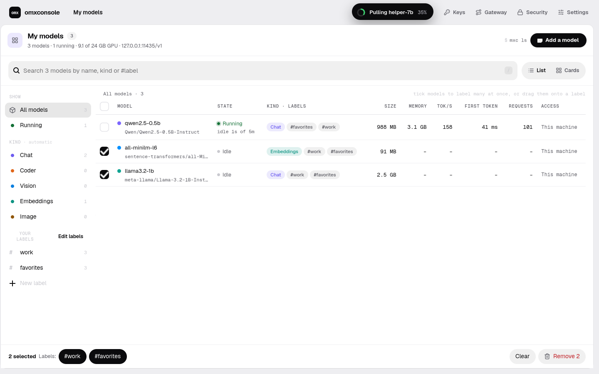

Your GPU, as a private model server.
One command gives you an OpenAI-compatible endpoint on your own NVIDIA GPU. Models load when they're called and sleep when idle.
arrow keys, space or swipe · 16 slides, about three minutes
Cloud AI sends a bill. Local AI hogs the GPU.
A meter on every word.
Cloud APIs bill per token, and every prompt, with your data in it, leaves the building.
One server per model.
The usual local setup is one port per model, each holding GPU memory all day, used or not.
"Not supported."
A fast engine like MAX runs many architectures, not all. The model you want may not be one.
When the model should live next to your data.
Private
Prompts and answers stay on this machine.
Offline
Weights come from Hugging Face once. Then no network.
No meter
The GPU you own does the work. No per-token bill.
An agent's brain
Anything that speaks the OpenAI API can call it.
what needs the cloud: serving none · weights Hugging Face, once · porting your Claude account · docs/site FAQ

A small server, and a console.
mxc, a command line, runs a daemon in front of MAX.
The console shows every model: its state, memory, speed, logs and a notebook.
the real console on a test install · mxstudio README
One line. It prints how to call it.
the lines mxconsole/cli.py serve_model and serve.py usage() print · options: --pin, --keep-alive 10m, --no-wait (docs/CLI.md)
The curl line it prints, step by step.
curl http://127.0.0.1:11435/v1/chat/completions \
-H "Authorization: Bearer $MXC_API_KEY" \
-H "Content-Type: application/json" \
-d '{"model": "qwen2.5-0.5b",
"messages": [
{"role": "user", "content": "Hello"}
]}'1 your machine, your port
2 one key per app, revocable
3 plain JSON, OpenAI's shape
4 the model is picked by name
Change one URL. Keep your code.
import os
from openai import OpenAI
client = OpenAI(
base_url="http://127.0.0.1:11435/v1",
api_key=os.environ["MXC_API_KEY"], # the mst-… key mxc printed
)
reply = client.chat.completions.create(
model="qwen2.5-0.5b",
messages=[{"role": "user", "content": "Hello"}],
)
print(reply.choices[0].message.content)also: stream: true (server-sent events), /v1/completions, /v1/embeddings, /v1/models · docs/API.md
Four layers, one URL on top.
docs/ARCHITECTURE.md · mxconsole/gateway.py, supervisor.py
A call for a sleeping model wakes it, then answers.
One start. Callers that arrive together share it.
Never mid-answer. A model unloads only when nothing is in flight.
Honest errors. Fields MAX would refuse are dropped and named in a reply header.
Idle models sleep. The LAN sees four routes.
unloads after 5 idle minutes by default
mxc expose · docs/USER_GUIDE.md, docs/ARCHITECTURE.md (LiteLLM removed in F-063: Caddy goes straight to the daemon)

Rebuilt in omxcode.
Native on Linux (GTK) and the Mac, a page on the web, from one Mojo app.
99.2 % of pixels match the original, on every one of 20 web screens.
Checked live: load a model, make a key, /v1 says 200, revoke it, 401.
docs/goals/33-report.md (omxcode) · live run used a fake max · the server still ships its JS console
Just HTTP. Replies come back as events.
struct Api(Movable):
def __init__(out self):
self.http = Http()
self.base = environment("MXC_URL", DEFAULT_URL) # e.g. http://127.0.0.1:11435
def admin(self, var r: Request) -> Request: # the console's own routes
if environment("MXC_ADMIN_KEY") != "":
return r^.header_from_env("X-Mst-Admin", "MXC_ADMIN_KEY").timeout(15000)
return r^.header("X-Mst-Admin", "1").timeout(15000)
def every(self) -> List[Every]: # poll: every 3 s and 5 s
return [Every(3000, POLL_CORE), Every(5000, POLL_SYSTEM), Every(3000, POLL_JOBS)]
# on POLL_CORE, update() sends the requests; each reply arrives as an Event
self.api.get(GOT_MODELS, "/admin/models")
self.api.get(GOT_METRICS, "/admin/metrics")/admin answers only on this machine; your apps use /v1 with their own key
mxc port <repo> --auto
Read the config; pick the closest architecture MAX has.
Claude Code writes the port in a bubblewrap sandbox.
Compile, serve, compare with Hugging Face. Up to 4 tries.
omxconsole re-runs the comparison on its own.
Registered at a pinned revision, and started.
architectures ported: GPT-2, Pythia, Phi-2, StarCoder2, StableLM 2, SmolLM3, Granite MoE, OLMoE
per port, mostly weights and compile
of your Claude usage per model
attempts by default; stops on the same failure twice
docs/PORTING.md · 2× RTX 3090, MAX 26.7 · text LLMs only · never starts on its own
What it doesn't do yet.
- 🐧Linux + NVIDIA only. Whether MAX serves these models on Apple silicon is still being checked.
- 🧪Public alpha on a MAX nightly (26.7).
- 📝Porting is text-only. Vision and embedding models haven't been tried.
- 🔐Porting needs Claude Code and bubblewrap, and can fail after spending.
- 🧩Parked models: remote code (EXAONE) and ALiBi (BLOOM) don't port.
- 🖥️The Mojo console isn't the one the server ships yet; that's still JavaScript.
docs/site FAQ · docs/PORTING.md · mxstudio README badges · omxcode docs/goals/33-report.md
From one GPU to every app on it.
- mxc serve, one endpoint
- Idle unload, pin
- Keys, HTTPS on your LAN
- Porting text models
- The console
- The packaged Mac app (in review)
- A catalog of finished ports
- A swappable porting agent
- omxplorer's Ask, on your GPU
- Our own router, if ever needed
- Porting vision and embedding models
docs/site FAQ "What's next?" · docs/plan.md F-064 · omxplorer's roadmap
Local AI, next to the rest of the lab.
omxplorer
will ask it questions about your data
omxcode
builds its console: write once, native everywhere
omxcore
the GPU engine, on the same card
omxqua
the look: springs and solid surfaces (this site; omxplorer next)
Read on: GitHub · the user guide · the console tour · omxlabs